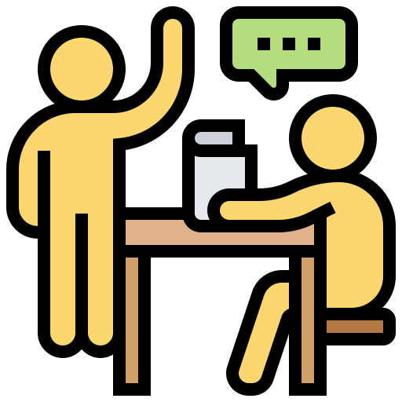

<?php 
$upmail = $_SESSION['upmail'];
// check if user is also a tutor
$isTutor = 0;
$query = "SELECT isTutor FROM student WHERE upmail='$upmail'";
$result = mysqli_query($db, $query);

foreach($result as $row){
    $isTutor = $row['isTutor'];
}

?>

<div class="sidebar">
    <div class="logo-details">
        
        <span class="logo_name">UP Peer Tutoring</span>
    </div>
    <ul class="nav-links">
        <li>
            <a href="tutee-index.php">
                <i class='bx bx-grid-alt' ></i>
                <span class="link_name">Dashboard</span>
            </a>
        </li>
        <li>
            <a href="tutee-find-tutor.php">
                <i class='bx bx-user-circle' ></i>
                <span class="link_name">Find Tutor</span>
            </a>
        </li>
        <li>
            <a href="tutee-my-sessions.php">
                <i class='bx bx-list-ul' ></i>
                <span class="link_name">My Sessions</span>
            </a>
        </li>
<?php if(!$isTutor): ?>
        <li>
            <a href="become-tutor.php">
                <i class='bx bx-user-plus'></i>
                <span class="link_name">Become a Tutor!</span>
            </a>
        </li>
<?php endif ?>
<?php if($isTutor): ?>
        <li>
            <a href="tutor-index.php">
                <i class='bx bx-log-in-circle'></i>
                <span class="link_name">Switch Role as Tutor</span>
            </a>
        </li>
<?php endif ?>
        <li>
            <a href="tutee-index.php?logout='1'">
                <i class='bx bx-log-out' ></i>
                <span class="link_name">Log out</span>
            </a>
        </li>
    </ul>
</div>


